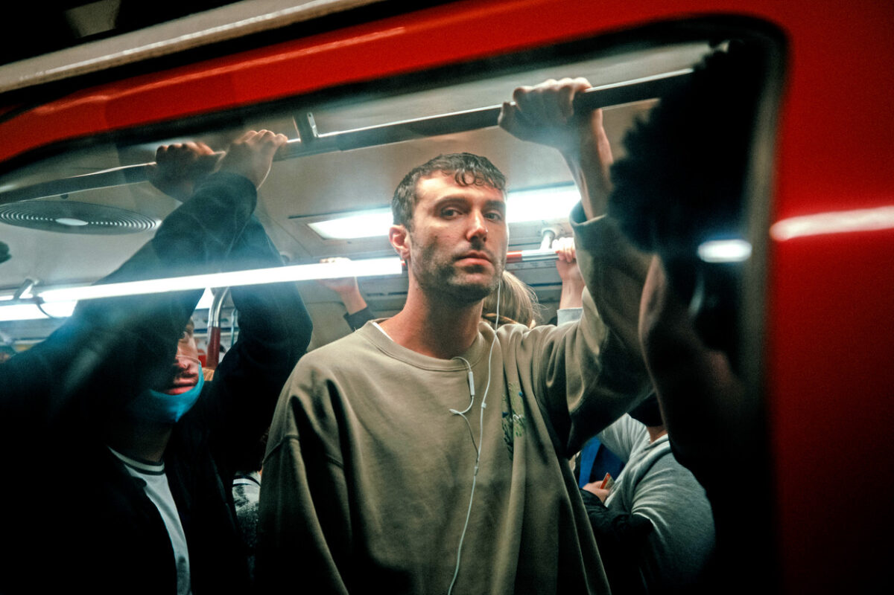

Fred Again

Table of Contents
-
Early Life and Education
-
Career
-
Discography
-
Awards/Honors
Early Life and Education
Frederick John Phillip Gibson, or simply Fred, is an English-born producer, singer,
songwriter, multi-instrumentalist, and DJ known as Fred Again (styled as “fred again…”).
Gibson was Born in 1993 in Balham, South London, and attended the private boarding school Marlborough
College in Wiltshire, England, between 2006 and 2011. The talented producer started his
professional musical career at the age of 16, when he joined an acapella group at Brian Eno's
studio in London.
Career
While Fred was with Brian Eno, he took him under his wing, where he collaborated with Eno
and Karl Hyde on their projects and albums. Four years into his journey, Gibson would come to co-write songs that would reach number one,
co-write with talented artists such as Clean Bandit, Demi Lovato, FKA Twigs, Stromzy, Rita Ora, and Ed Sheeran.
Actual Life and other various projects
Through his rise in fame, Fred began to work on his own projects such as Actual Life,
where he would artistically piece together samples of personal voice memos, clips from social media,
and music by other artists into original tracts. Gibson has released three of these albums, described
as a "collaborative diary" reflecting his life experiences:
- Actual Life (April 14 - December 17 2020), released April 2021.
- Actual Life 2 (February 2 - October 15 2021), released November 2021.
- Actual Life 3 (January 1 - September 9 2022), released October 2022.
In July 2022, Gibson performed a set for Boiler Room in London, the third most-watched set on Boiler Room's YouTube Channel.
Gibson's debut tour, which ran between October 2022 and February 2023 stopped in Europe, America, New Zealand and Australia.
Prior to this tour, he had done sporadic pop-up shows and festivals starting in late 2021. Gibson and renouned DJ "Skrillex"
released their collaboration "Rumble" featuring Flowdan. Following this, Fred, Skrillex, and Four Tet played shows across different London venues.
Soon after, Fred along with collaborators performed at a sold out Madison Square Garden.
On 10 April 2023, Gibson appeared on NPR's Tiny Desk Concerts.
On 24 April 2023, he, alongside Skrillex and Four Tet, played the final set of Coachella.
On 23 June 2023, Gibson made his first appearance at Glastonbury Festival.
On 8 December 2023, Gibson released "Leavemealone" featuring Baby Keem.
On 28 February 2024, Gibson released "Stayinit" featuring Lil Yachty and Overmono.
On 31 May 2024, Gibson and Anderson .Paak released "Places to Be" featuring Chika.
On 17 August 2024, he played at Lowlands Festival in the Netherlands, and on 24 August 2024, he headlined Reading Festival.
On 6 September, 2024, he released his 5th studio Album, "Ten Days."
Discography
Studio albums
- Actual Life (April 14 - December 17 2020) (2021)
- Actual Life 2 (February 2 - October 15 2021) (2021)
- Actual Life 3 (January 1 - September 9 2022) (2022)
- Ten Days (2024)
Collaborative albums
- Secret Life (with Brian Eno) (2023)
Compilation Albums
Awards/Honors
| Year |
Awards |
Catagory |
| 2020 |
Brit Awards |
Producer of the year |
| 2022 |
Brit Awards |
Best Live Act |
| 2024 |
Grammys |
Best Dance/Electronic Recording |
| 2024 |
Grammys |
Best Dance/Electronic Album |